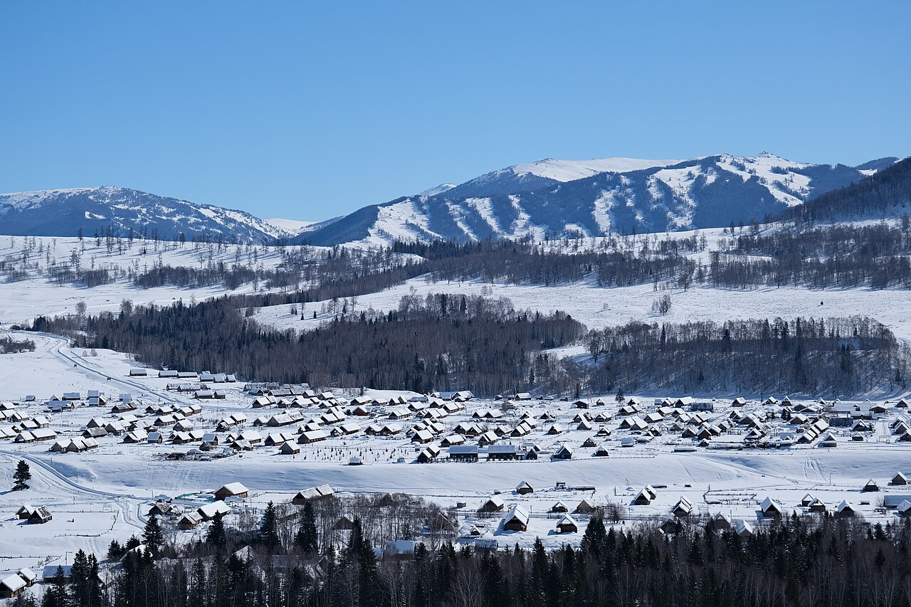

你好，我是冬冬。
记录日常，也记录创作。
工作里，我用三维和视觉讲产品的故事。
生活里，也想给那些值得记录的想法、准备和远行，留一个位置。
DESIGNEVERYDAYON THE ROAD
慢慢记录，不急着填满。↓01 / DIFFERENT SIDES OF ME
两个空间，同一个我。
一边是工作与创作，一边是生活与远方。
从这里，走进我不同的侧面。

自定时区
SELECTED BRAND EXPLORATION / 2026DESIGN & CREATION01
设计与创作
八年电商视觉经验，以三维为核心。作品、品牌探索，以及从一个模型到一套视觉表达的过程。
个人作品集 / design.suelr.com↗

2027 / 出行计划 · 尚未出发LIFE & EXPLORATION02
生活与远行
从金华出发的十五天冬季自驾计划。路线、装备和出发前的准备，先记在路书里，故事等上路之后再写。
冬季路书 / winter.suelr.com↗
冬季图像为目的地参考实景，非本人旅拍。摄影 Leeinm / 原图 / CC BY-SA 4.0。

02 / NOTES ALONG THE WAY
把一些想法，留在这里。
关于设计的思考，出发前的准备。
先从已有的创作与计划开始记录。
设计与创作生活与远行设计与创作
给一个品牌，建立自己的秩序
从「清醒的早晨」出发，聊聊 N/OWN 的起点，以及一套视觉语言如何成立。
在真正出发之前，先写一份冬季路书
金华出发，两个人、十五天、两条候选路线。远行还在计划中，先把准备慢慢做好。
从一个模型，到一套产品表达
建模、材质、布光、场景与后期，如何串起我的三维工作流。
共 3 篇记录
从电商详情页、主图和产品精修开始，我的工作逐渐延伸到三维建模、渲染、品牌视觉与产品动画。这些年积累的，不只是软件的使用方法，也包括如何把一个方向拆解成能够完成和交付的步骤。
现在，我以 C4D、Octane 等工具推进产品视觉，也将 ComfyUI 用于场景探索。N/OWN「自定时区」是一次自主品牌探索，让我从单张图继续走向一套完整的视觉语言。
这个网站留给工作之外更多的自己：创作过程、日常想法，还有正在准备的冬季远行。它会慢慢长成一个个人空间，不需要一开始就有答案。
- EXPERIENCE
- 8 年电商视觉
- FOCUS
- 三维 / 品牌 / 动效
- CURRENTLY
- 创作 N/OWN · 准备 2027 冬季远行
04 / SAY HELLO
有话想说，欢迎来信。
设计交流、工作机会，或是关于路上那些事的一点分享，都可以。